Enfoque Pedagógico-Competitivo para forjar ingenieros y científicos
capaces de competir en escenarios internacionales como F1 in Schools,
World Robot Olympiad y ferias de ciencias ISEF.
Este documento presenta una reestructuración exhaustiva y una expansión académica de la "Unidad 1: Mecánica
de Fluidos y Sistemas Hidráulicos", diseñada específicamente para un entorno educativo de alto rendimiento.
Enfoque Pedagógico
El enfoque Pedagógico-Competitivo adoptado aquí trasciende la enseñanza tradicional
de la física; su objetivo es forjar ingenieros y científicos capaces de competir en escenarios
internacionales.
ALBATROS TECH
Actividades centradas en:
Construcción física
Manufactura práctica
Comprensión tangible
Habilidades "Maker"
ALBATROS PLUS
Actividades de análisis superior:
Simulación CFD
Integración electrónica
Ética ingenieril
Física de materiales
Competencias Internacionales de Referencia
Competencia
Enfoque
Relación con la Unidad
F1 in Schools
Aerodinámica y manufactura
Capítulo 2: Bernoulli y CFD
World Robot Olympiad
Robótica y automatización
Capítulo 3: Brazo hidráulico
ISEF
Investigación científica
Metodología experimental
UNIDAD 1Introducción3
Objetivos Generales de la Unidad
Objetivo General
Dotar al estudiante de la capacidad analítica para deconstruir el comportamiento de los fluidos en
reposo y en movimiento, aplicando estos conocimientos al diseño de sistemas tecnológicos modernos.
Objetivos Específicos
Analizar
Las fuerzas intermoleculares que dictan la "personalidad" de un fluido: tensión superficial,
viscosidad, cohesión y adhesión.
Aplicar
Los principios de la hidrostática para resolver problemas de ingeniería civil (presas) y robótica
(actuadores hidráulicos).
Comprender
Las ecuaciones de Continuidad y Bernoulli para el análisis de fluidos en movimiento.
Diseñar
Sistemas tecnológicos modernos, desde la microfluídica hasta perfiles aerodinámicos de alta
eficiencia.
Construir
Un brazo robótico hidráulico funcional con capacidad de retroalimentación sensorial.
Reflexionar
Sobre las implicaciones éticas del diseño ingenieril a través del análisis de casos históricos.
Nota: Cada objetivo se evalúa mediante actividades prácticas específicas que encontrarás a
lo largo del manual, identificadas con el símbolo de actividad.
UNIDAD 1Objetivos Generales4
01
La Naturaleza del Fluido e Hidrostática
Desde la interacción molecular hasta la macro-ingeniería de presas,
exploramos por qué los fluidos se comportan como lo hacen.
Capítulo 1: La Naturaleza del Fluido e Hidrostática
Objetivo
Comprender las propiedades fundamentales de los fluidos a nivel molecular y aplicar los principios de
la hidrostática en contextos de ingeniería real, considerando las condiciones ambientales locales.
Temas del Capítulo
Sección
Tema
Tipo
1.1
Propiedades Fundamentales de Superficies
Teoría
1.2
Cohesión y Adhesión
Teoría + Actividad
1.3
Capilaridad y Microfluídica
Teoría + Actividad
1.4
Densidad y Peso Específico
Teoría
1.5
Presión Hidrostática
Teoría + Actividad
1.6
Presión Atmosférica Local
Procedimiento
1.7
NPSH y Cavitación
Nota Técnica
Prerrequisitos: Conocimientos básicos de física (fuerza, presión, energía) y matemáticas
(álgebra, proporciones).
UNIDAD 1Capítulo 1: Objetivos6
Conceptos Fundamentales
La física clásica suele comenzar con la idealización del cuerpo rígido, un objeto
que no se deforma bajo la acción de fuerzas. Sin embargo, el universo observable es
predominantemente fluido.
Desde el plasma de las estrellas hasta la circulación sanguínea, la materia fluye. En este
bloque, abandonamos la rigidez para adentrarnos en la Mecánica de Medios Continuos.
¿Qué es un Fluido?
Un fluido es una sustancia que se deforma continuamente cuando se le aplica un esfuerzo cortante, sin
importar cuán pequeño sea. Esta definición incluye tanto líquidos como gases.
Sólidos vs Fluidos
Sólidos
Forma definida
Volumen definido
Resisten esfuerzos cortantes
Moléculas en posiciones fijas
Alta cohesión molecular
Fluidos
Adoptan forma del contenedor
Líquidos: volumen definido
Se deforman continuamente
Moléculas en movimiento
Cohesión variable
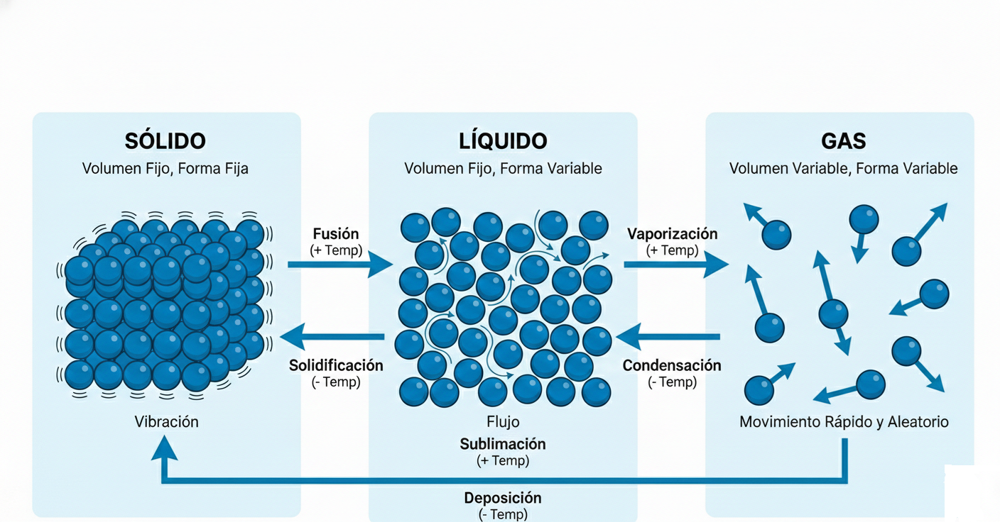
UNIDAD 1Capítulo 1: Conceptos Fundamentales7
1.1 Propiedades Fundamentales: La Física de Superficies
Para comprender por qué un mosquito camina sobre el agua o cómo un árbol transporta savia a 100 metros de
altura, debemos descender al nivel molecular.
Cohesión y Adhesión: La Batalla Interfacial
COHESIÓN
Fuerza de atracción entre moléculas de la misma sustancia.
En el agua, esta fuerza es excepcionalmente alta debido a los puentes de
hidrógeno.
Cada molécula de agua actúa como un pequeño imán dipolar.
ADHESIÓN
Fuerza de atracción entre moléculas de sustancias diferentes.
Cuando un fluido entra en contacto con un sólido, se libra una batalla entre
cohesión y adhesión.
El resultado determina el comportamiento interfacial.
Tensión Superficial
La cohesión genera una "piel" elástica en la superficie del líquido, conocida como Tensión
Superficial. Las moléculas en la superficie experimentan una fuerza neta hacia el interior
porque no tienen vecinas arriba.
Tensión Superficial (γ)
γ = F / L
Donde F es la fuerza y L es la longitud. Unidades: N/m o J/m²
Dato: La tensión superficial del agua a 20°C es aproximadamente 0.0728 N/m, una de las más
altas entre los líquidos comunes.
UNIDAD 1Capítulo 1: Cohesión y Adhesión8
Análisis de Caso: La Paradoja del Mercurio y el Oro
Un ejemplo clásico escolar es que el agua "moja" el vidrio (Adhesión > Cohesión) mientras que el mercurio no
lo hace (Cohesión > Adhesión), formando un menisco convexo.
Comportamiento en Diferentes Superficies
Agua en Vidrio
Adhesión > Cohesión
Menisco cóncavo
El agua "sube" por las paredes
Ángulo de contacto < 90°
El líquido "moja" la superficie
Mercurio en Vidrio
Cohesión > Adhesión
Menisco convexo
El mercurio se "aleja" de las paredes
Ángulo de contacto > 90°
El líquido "no moja" la superficie
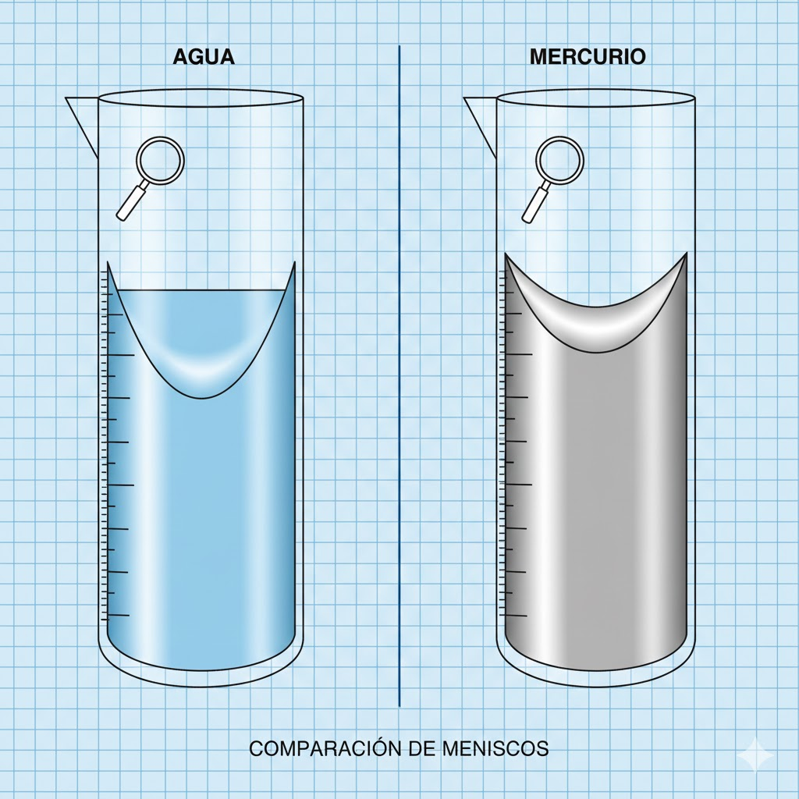
Excepción Fascinante: Si sustituimos la superficie de vidrio por una de
oro, el comportamiento del mercurio cambia drásticamente. El mercurio "moja" el oro de
manera agresiva, formando una amalgama. Esto no es simple adhesión física, sino la
formación de enlaces metálicos fuertes.
Física Cuántica en Acción
El mercurio es líquido a temperatura ambiente debido a efectos relativistas. Los electrones
en sus orbitales s se mueven a velocidades cercanas a la de la luz, aumentando su masa y contrayendo el
orbital. Esto debilita los enlaces mercurio-mercurio, bajando su punto de fusión a -39°C.
UNIDAD 1Capítulo 1: Cuadro Comparativo9
Mini Actividades
Verifica tu Comprensión: Cohesión y Adhesión
Antes de continuar, verifica que comprendes los conceptos fundamentales respondiendo las
siguientes preguntas:
Pregunta 1: Conceptos Básicos
¿Cuál es la diferencia fundamental entre cohesión y adhesión? Escribe un ejemplo de
cada una.
Pregunta 2: Aplicación
Un insecto camina sobre el agua sin hundirse. ¿Qué propiedad física lo hace posible?
Explica el mecanismo a nivel molecular.
Pregunta 3: Análisis de Casos
Observa las siguientes situaciones y marca la fuerza dominante:
Situación
Cohesión > Adhesión
Adhesión > Cohesión
Gota de agua en hoja de loto
□
□
Agua subiendo por una servilleta
□
□
Mercurio en un termómetro de vidrio
□
□
Pintura adhiriéndose a una pared
□
□
Gotas de lluvia en un parabrisas encerado
□
□
Pregunta 4: Pensamiento Crítico
Si pudieras eliminar completamente la tensión superficial del agua, ¿qué fenómenos
cotidianos dejarían de funcionar? Menciona al menos tres.
UNIDAD 1Mini Actividades: Cohesión y Adhesión9B
1
Observación de Meniscos
Objetivo
Observar y documentar el comportamiento interfacial de diferentes líquidos en contacto con
vidrio.
Materiales
3 tubos de ensayo de vidrio
Agua destilada
Aceite vegetal
Alcohol isopropílico
Gotero
Regla milimétrica
Procedimiento
Vierte 5 ml de cada líquido en un tubo de ensayo diferente
Coloca los tubos en una gradilla bien iluminada
Observa el menisco de cada líquido a nivel de tus ojos
Dibuja lo que observas en el espacio indicado
Dibuja los meniscos observados:
Agua
Aceite
Preguntas de análisis:
1. ¿Cuál líquido presenta mayor adhesión al vidrio? ¿Cómo lo sabes?
2. ¿Qué relación existe entre el ángulo de contacto y la tensión superficial?
UNIDAD 1Actividad 1: Meniscos10
Experimento
Medición de Tensión Superficial: Método del Gotero
Este experimento cuantitativo permite comparar la tensión superficial de diferentes líquidos
usando materiales simples.
Fundamento Teórico
Una gota se forma cuando la tensión superficial ya no puede sostener el peso del líquido
acumulado. El número de gotas que caben en un volumen fijo es inversamente proporcional al tamaño de cada
gota.
A mayor tensión superficial → gotas más grandes → menos gotas por ml
Materiales
Gotero de plástico calibrado
Agua destilada
Alcohol isopropílico
Agua con jabón (1 gota/10ml)
Aceite vegetal
Recipiente pequeño
Procedimiento
Llena el gotero con 1 ml de agua destilada
Cuenta las gotas necesarias para vaciar completamente el gotero
Repite 3 veces y calcula el promedio
Repite con cada líquido
Registro de Datos
Líquido
Ensayo 1
Ensayo 2
Ensayo 3
Promedio
Agua destilada
Agua + jabón
Alcohol isopropílico
Aceite vegetal
Análisis
Ordena los líquidos de mayor a menor tensión superficial según tus resultados:
¿Por qué el jabón reduce la tensión superficial del agua?
UNIDAD 1Experimento: Tensión Superficial10B
1.2 Capilaridad y Microfluídica
La capilaridad es el resultado macroscópico de la adhesión superando a la cohesión en espacios confinados. En
la ingeniería moderna, esto ha dado lugar a la Microfluídica.
Ley de Jurin
La altura que alcanza un líquido en un capilar se define como:
Ley de Jurin
h = (2γ cos θ) / (ρgr)
Variables:
h = altura capilar (m)
γ = tensión superficial (N/m)
θ = ángulo de contacto (°)
ρ = densidad del líquido (kg/m³)
g = aceleración gravitacional (m/s²)
r = radio del tubo (m)
Observación clave: La altura es inversamente proporcional al radio. Tubos más delgados =
mayor ascenso capilar.
Tecnología Lab-on-a-Chip
En dispositivos médicos modernos, se diseñan canales microscópicos donde la capilaridad transporta sangre sin
necesidad de bombas externas.
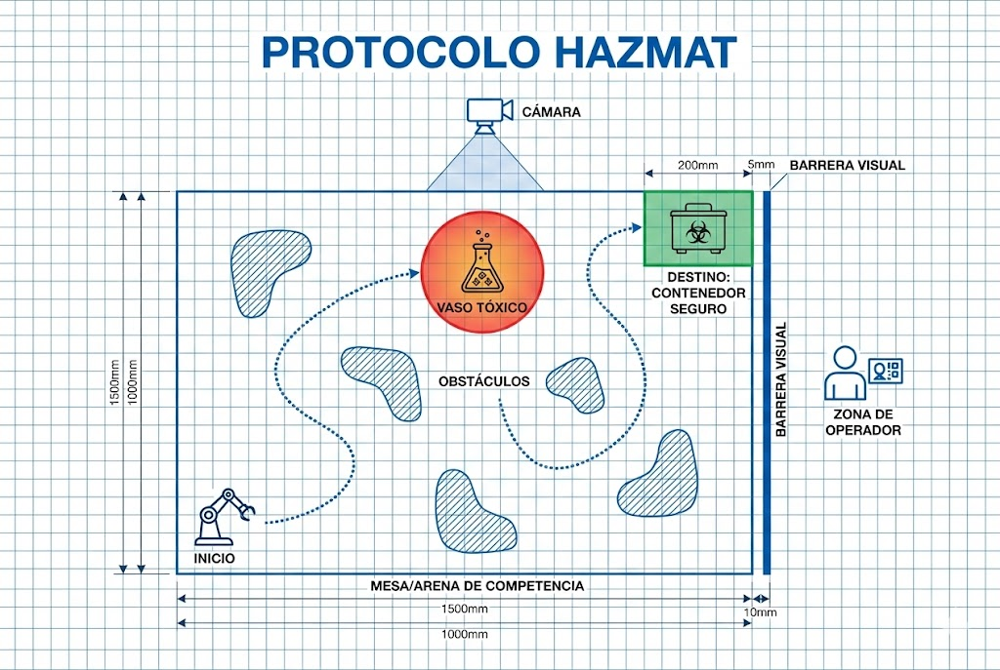
El diseño de "válvulas capilares" pasivas —cambios abruptos en la geometría del
canal que detienen el flujo hasta que se aplica una presión externa— es una competencia crítica en
bioingeniería.
UNIDAD 1Capítulo 1: Capilaridad11
Ejemplo Resuelto: Ley de Jurin
PROBLEMA
¿A qué altura ascenderá el agua en un tubo capilar de vidrio con radio interno de 0.5 mm?
Datos:
γ (agua) = 0.0728 N/m
θ (agua-vidrio) = 0° (cos 0° = 1)
ρ (agua) = 1000 kg/m³
g = 9.81 m/s²
r = 0.0005 m
Solución:
h = (2 × 0.0728 × 1) / (1000 × 9.81 × 0.0005)
h = 0.1456 / 4.905 = 0.0297 m = 29.7 mm
Resultado: El agua asciende aproximadamente 3 cm en un tubo de 1 mm de diámetro.
Tabla de Ascenso Capilar del Agua
Radio del tubo (mm)
Altura de ascenso (mm)
Aplicación típica
0.1
148.5
Microfluídica
0.5
29.7
Laboratorio
1.0
14.9
Termómetros
2.0
7.4
Tubos de ensayo
5.0
3.0
Pipetas
Aplicación biológica: Los árboles usan la capilaridad (junto con la transpiración) para
transportar savia hasta 100 metros de altura.
UNIDAD 1Capítulo 1: Ejemplos Ley de Jurin12
2
Experimento de Capilaridad
Objetivo
Verificar experimentalmente la Ley de Jurin y analizar la relación entre el radio del tubo y la
altura capilar.
Materiales
3 tubos capilares de diferentes diámetros (si es posible: 1mm, 2mm, 3mm)
Vaso de precipitados con agua coloreada
Regla milimétrica
Soporte universal con pinzas
Procedimiento
Mide el diámetro interno de cada tubo (usa un calibrador si es posible)
Sumerge verticalmente cada tubo en el agua coloreada
Espera a que el nivel se estabilice
Mide la altura desde la superficie del agua hasta el menisco
Registra tus datos en la tabla
Tabla de Datos:
Tubo
Diámetro (mm)
Radio (mm)
h medida (mm)
h teórica (mm)
% Error
1
2
3
Análisis:
¿Se cumple la relación inversa entre radio y altura? Explica.
¿Qué fuentes de error identificas en tu experimento?
UNIDAD 1Actividad 2: Capilaridad13
1.3 Densidad y Peso Específico
Es crucial en ingeniería distinguir entre la masa (inercia) y el peso (fuerza gravitacional) por unidad de
volumen.
Densidad (ρ)
ρ = m / V
Unidades: kg/m³
Propiedad escalar intrínseca
Peso Específico (Pe)
Pe = ρ · g
Unidades: N/m³
Depende del campo gravitatorio local
Tabla de Densidades Comunes
Sustancia
Densidad (kg/m³)
Peso Específico (N/m³)
Aire (20°C, 1 atm)
1.2
11.8
Agua dulce
1,000
9,810
Agua de mar
1,025
10,055
Aceite
900
8,829
Mercurio
13,600
133,416
Aluminio
2,700
26,487
Acero
7,850
77,008
Insight de Ingeniería de Materiales: Al diseñar estructuras aeroespaciales, no buscamos
simplemente la densidad más baja, sino la Resistencia Específica (Resistencia/Densidad). El
aluminio y el titanio son preferidos sobre el acero en aviación porque ofrecen mayor resistencia por cada
kilogramo de peso añadido.
UNIDAD 1Capítulo 1: Densidad14
1.4 Presión Hidrostática
La Paradoja Hidrostática establece que la presión en un fluido en reposo depende
exclusivamente de la profundidad (h) y no de la forma del recipiente.
Presión Hidrostática
Ph = Patm + ρ · g · h
Variables:
Ph = Presión a profundidad h
Patm = Presión atmosférica
ρ = Densidad del fluido
g = Gravedad
h = Profundidad
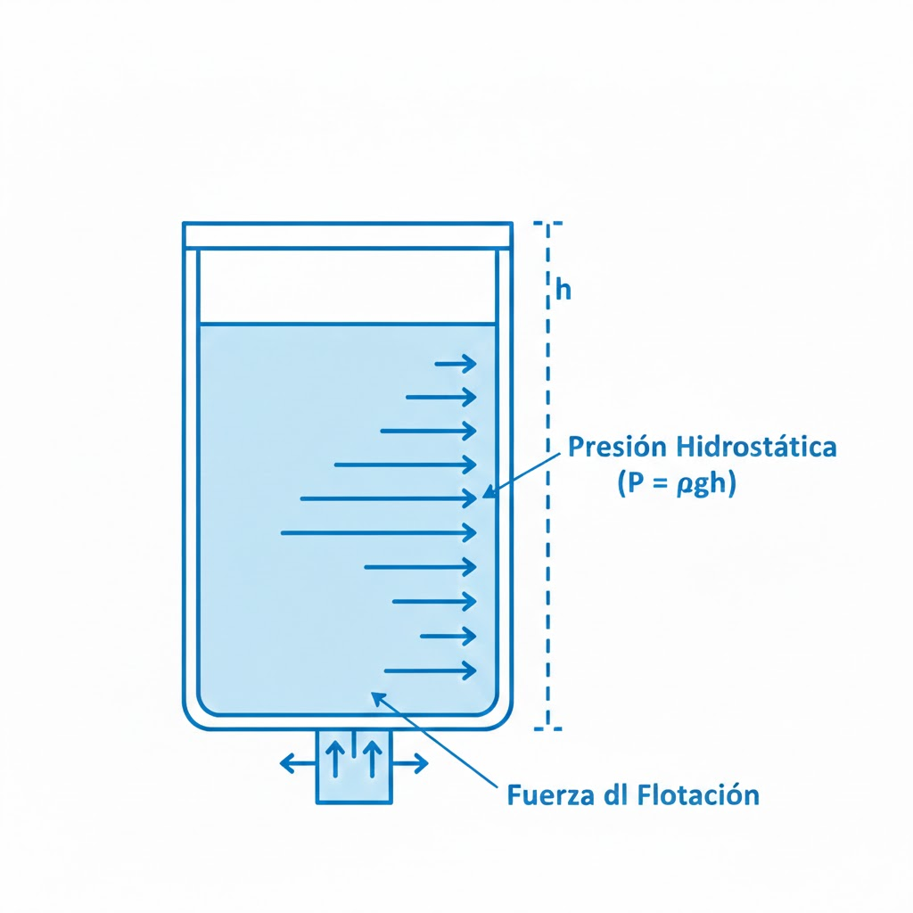
La Paradoja Explicada
Tres recipientes con formas diferentes pero igual altura de líquido ejercen la misma presión en el fondo.
Esto parece contradictorio porque contienen diferentes cantidades de agua, pero la presión solo depende de
la altura de la columna de líquido.
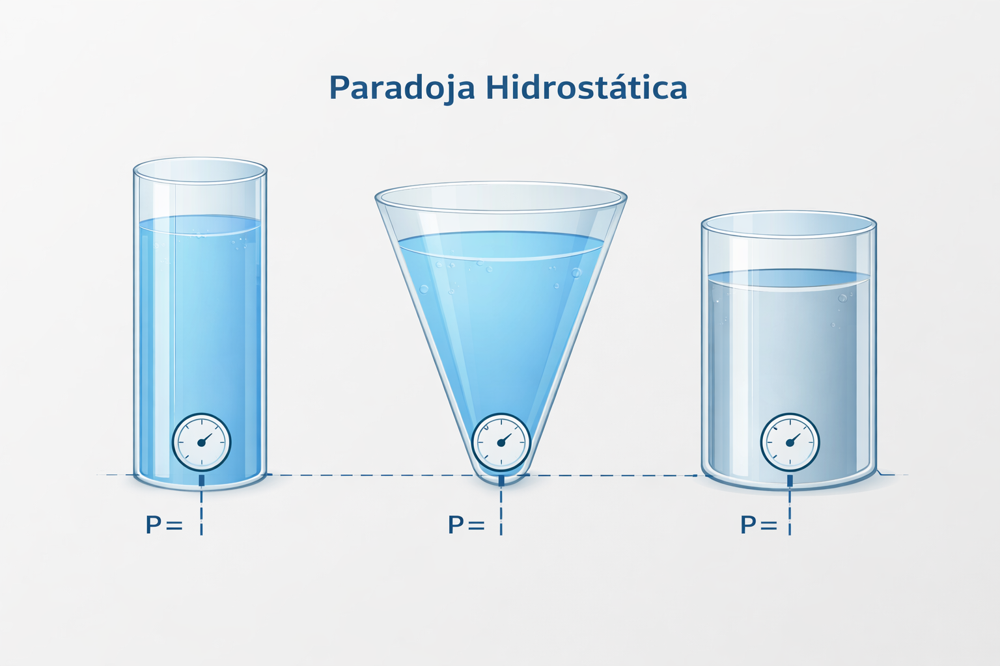
UNIDAD 1Capítulo 1: Presión Hidrostática15
Presión a Diferentes Profundidades (Agua Dulce)
Profundidad
0 m (superficie)
1 m
10 m
100 m
1,000 m
10,000 m
Presión (Pa)
101,325
111,135
199,425
1,082,325
9,911,325
98,201,325
Equivalente (atm)
1.0
1.1
2.0
10.7
97.8
969.2
Aplicaciones de la Presión Hidrostática
Ingeniería Civil
Diseño de presas
Muros de contención
Túneles submarinos
Cimentaciones profundas
Exploración
Batiscafos
Submarinos
Buceo técnico
Plataformas petroleras
Dato extremo: En el punto más profundo del océano, la Fosa de las Marianas (≈11,000 m), la
presión es de aproximadamente 1,086 bar (1,072 atm). A esta presión, el agua se comprime aproximadamente un
5%.
UNIDAD 1Capítulo 1: Cuadro de Presiones16
Reto Digital
Simulador PhET: "Under Pressure" (Bajo Presión)
Explora la presión en fluidos de manera interactiva utilizando las simulaciones de PhET
Colorado.
Análisis de Presión Atmosférica Local: Caso Zumpango de Ocampo
Para un ingeniero, asumir condiciones estándar (nivel del mar, 1 atm) puede ser un error fatal.
Recolección de Datos Meteorológicos
Utilizando estaciones meteorológicas locales (como la del Aeropuerto Internacional Felipe
Ángeles):
Altitud: Zumpango ≈ 2,250 msnm
Presión típica: 583-586 mmHg (≈0.77 atm)
Nota: Los reportes meteorológicos dan presión "ajustada al nivel del mar" (≈770
mmHg). El ingeniero debe convertir a presión absoluta local.
Cálculo del Punto de Ebullición
La reducción de presión afecta la termodinámica del agua:
A 1 atm (760 mmHg): agua hierve a 100°C
A 0.77 atm (585 mmHg): agua hierve a 92-93°C
Implicaciones Técnicas
Cocción: Tiempos de cocción/esterilización deben extenderse
Motores: Pierden 20-25% de potencia nominal
Bombas: Mayor riesgo de cavitación
UNIDAD 1Capítulo 1: Presión Atmosférica Local17
Infografía
La Física Invisible del Agua
UNIDAD 1Capítulo 1: Infografía18
Nota Destacada
¡Cuidado con la "Altura"! NPSH y Cavitación
En el diseño de sistemas de bombeo para la zona de Zumpango, ignorar la altitud es el error
número uno.
¿Qué es el NPSH?
Net Positive Suction Head (Cabeza de Succión Positiva Neta) es la diferencia entre la
presión absoluta en la entrada de la bomba y la presión de vapor del líquido.
NPSH Disponible
NPSHd = Patm/ρg + hs - hf -
Pv/ρg
¿Qué es la Cavitación?
La presión atmosférica es la fuerza que "empuja" el agua hacia la entrada de la bomba cuando esta crea un
vacío parcial. Con menos atmósfera disponible (585 mmHg vs 760 mmHg), la capacidad de succión se reduce
drásticamente.
Si el agua se acelera demasiado en la entrada, la presión local puede caer por debajo de la presión de vapor,
haciendo que el agua "hierva" en frío. Estas burbujas implosionan con la fuerza de
micro-balas, picando el metal de los impulsores.
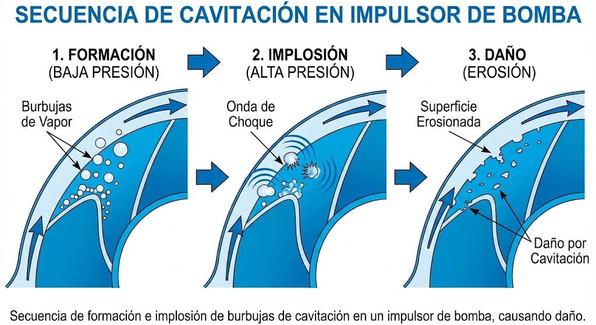
Consecuencia: El ingeniero debe recalcular el NPSH disponible para evitar destruir los
álabes de la bomba. Una bomba diseñada para nivel del mar puede fallar prematuramente en altitudes elevadas.
UNIDAD 1Capítulo 1: NPSH y Cavitación19
Mapa Mental
Mecánica de Fluidos - Capítulo 1
UNIDAD 1Capítulo 1: Mapa Mental20
3
Cálculos de Presión Hidrostática
Instrucciones
Resuelve los siguientes problemas aplicando la ecuación de presión hidrostática. Muestra todo el
procedimiento.
Problema 1
Un buzo desciende a 15 metros de profundidad en agua de mar (ρ = 1025 kg/m³). Si
la presión atmosférica es 101,325 Pa, ¿cuál es la presión total que experimenta?
Problema 2
Una presa tiene 40 metros de altura. Calcula la presión en la base y la fuerza
total sobre una compuerta de 3m × 2m ubicada en el fondo.
Problema 3 (Albatros Plus)
En Zumpango (Patm = 78,000 Pa), una bomba debe succionar agua desde un
pozo. Si el NPSH requerido por la bomba es 3m y la presión de vapor del agua a 25°C es 3,169 Pa,
¿cuál es la altura máxima de succión teórica?
UNIDAD 1Actividad 3: Cálculos21
Conclusión
La unidad de Hidrostática nos enseña que los fluidos, aunque adaptables y aparentemente suaves,
ejercen fuerzas colosales cuando se confinan o acumulan.
Desde la escala molecular que permite a la savia ascender por los árboles, hasta la escala civil
donde millones de litros de agua amenazan con volcar una presa, los principios son los mismos.
Lecciones Clave del Capítulo
La cohesión y adhesión determinan el comportamiento de los
fluidos en contacto con superficies sólidas.
La capilaridad es una herramienta poderosa en microfluídica y sistemas
biológicos.
La presión hidrostática depende solo de la profundidad, no de la forma del
contenedor.
Las condiciones locales (altitud, temperatura) afectan significativamente los
cálculos de ingeniería.
Reflexión: El ingeniero exitoso no lucha contra las fuerzas de los fluidos, sino que las
redirige: usa la incompresibilidad para multiplicar fuerza en un gato hidráulico o la flotabilidad para
transportar carga. La comprensión profunda de la presión atmosférica local y las propiedades del material es
lo que separa un diseño seguro de una falla catastrófica.
UNIDAD 1Capítulo 1: Conclusión22
Profesionales con Valor
Ética en Ingeniería Civil: El Caso de la Presa Austin
30 de septiembre de 1911 - La presa Austin en Pennsylvania colapsó, liberando
millones de litros de agua y acabando con la vida de más de 70 personas.
El Fallo Técnico
La presa de concreto se construyó sobre una base de roca sedimentaria permeable.
El agua se infiltró por debajo (subpresión)
Lubricó las capas de roca
La presa entera se deslizó
El Fallo Ético
Los ingenieros y propietarios ignoraron las señales de advertencia:
Grietas previas documentadas
Fugas visibles
Decisión de ahorrar costos
Presión por mantener producción
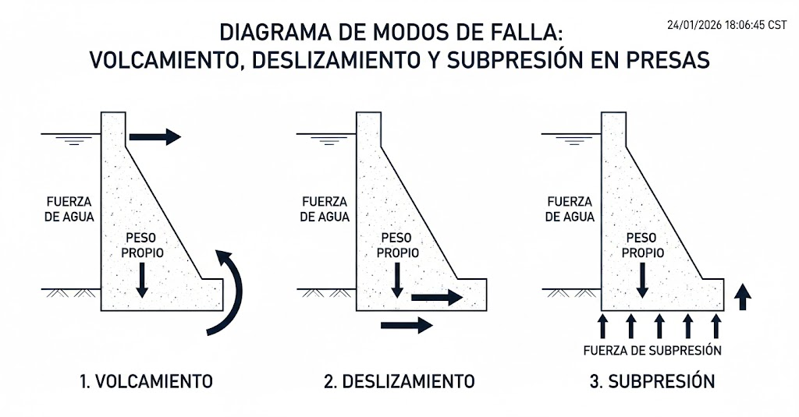
Código de Ética de la Ingeniería: "La seguridad, salud y bienestar del público son
primordiales." Ningún ahorro presupuestal o plazo de entrega justifica poner vidas en riesgo.
En Albatros Plus, analizamos estos casos no para juzgar el pasado, sino para
prevenir el futuro.
UNIDAD 1Profesionales con Valor: Presa Austin23
4
Análisis Ético de Casos de Ingeniería
Contexto
Como futuro ingeniero, tu responsabilidad primera es la seguridad pública. En esta actividad
reflexionarás sobre las implicaciones éticas de las decisiones de ingeniería.
Caso de Estudio: La Presa Austin
Lee nuevamente el caso y responde las siguientes preguntas:
1. ¿Cuáles fueron las señales de advertencia que los
ingenieros ignoraron?
2. ¿Qué presiones externas pudieron influir en la decisión
de no actuar?
3. Si tú hubieras sido el ingeniero a cargo y la gerencia te
hubiera presionado para ignorar las fallas, ¿qué habrías hecho? Justifica tu respuesta.
4. ¿Qué medidas técnicas podrían haber prevenido la falla?
Menciona al menos tres.
Reflexión Personal
¿Cómo aplicarías las lecciones de este caso en tu futura práctica profesional?
UNIDAD 1Actividad 4: Ética24
Prácticas Integradoras
Actividad Albatros Tech: "El Huevo Submarino y la Densidad Variable"
Enfoque: Competitivo-Experimental
Reto
Lograr que un huevo se mantenga en suspensión neutra (ni flote ni se hunda) en el centro de
un vaso de precipitados.
Fundamento Físico
Cuando un objeto está sumergido en un fluido, experimenta una fuerza de empuje (Principio de Arquímedes):
Condición de Equilibrio
E = W → ρfluido · V · g = ρhuevo · V · g
Suspensión neutra cuando: ρfluido ≈ ρhuevo
Materiales
1 huevo crudo
1 vaso de precipitados o recipiente transparente alto
Sal de mesa (suficiente para saturar)
Agua
Cuchara para mezclar
Cronómetro
UNIDAD 1Práctica: Huevo Submarino25
5
Guía del Experimento: Huevo Submarino
Procedimiento
Coloca el huevo en agua dulce. Observación: Se hunde (Peso > Empuje).
En otro recipiente, prepara una solución saturada de sal (disuelve sal hasta que no se
disuelva más).
Técnica del gradiente: Añade cuidadosamente la solución salina al vaso del huevo O añade
agua dulce sobre una base salina.
Meta: El equipo que logre mantener el huevo estable en el medio
geométrico del vaso por 1 minuto gana.
Registro de Datos
Intento
Técnica usada
Posición del huevo
Tiempo estable
1
2
3
Preguntas de Análisis
¿Por qué funciona crear un gradiente de densidad?
¿Qué aplicaciones reales tienen los gradientes de densidad? (Pista:
oceanografía, centrifugación)
UNIDAD 1Actividad 5: Huevo Submarino26
Prácticas Integradoras
Actividad Albatros Plus: "Investigación Forense de Estructuras (Dams)"
Enfoque: Analítico-Ético
Reto
Utilizando un modelo físico de una presa en un tanque de agua, los estudiantes deben predecir y provocar tres
modos de falla.
Modos de Falla en Presas
1. Volcamiento
Aumentar el nivel del agua hasta que el momento de fuerza supere el momento
estabilizador del peso de la presa.
2. Deslizamiento
Lubricar la base del modelo para simular la subpresión (como en la Presa
Austin).
3. Falla de Material
Usar un material degradable para simular concreto de baja calidad.
Materiales Sugeridos para el Modelo
Tanque transparente
Bloques de madera o acrílico
Plastilina o arcilla
Aceite o jabón (lubricante)
Azúcar compactado (material degradable)
Agua coloreada
Regla y transportador
Cámara para documentar
Entregable: Un reporte técnico de una página (formato ejecutivo) recomendando medidas
correctivas (ej. inyección de lechada en la base, aumentar el ancho de la base, vertederos de emergencia).
UNIDAD 1Práctica: Forense de Presas27
Recursos
Herramientas y materiales de apoyo para el Capítulo 1.
Simuladores Interactivos
Recurso
Tema
Enlace
PhET "Bajo Presión"
Presión hidrostática P = ρgh
phet.colorado.edu
PhET "Estados de la Materia"
Cohesión molecular
phet.colorado.edu
PhET "Density"
Flotabilidad y densidad
phet.colorado.edu
Lecturas Técnicas
"Why Buildings Fall Down" de Matthys Levy - Capítulo sobre presas
Manual de Bombas Grundfos - Sección de NPSH y Cavitación
Mecánica de Fluidos de White - Capítulos 1-3
Videos Recomendados
"Surface Tension and Water" - Veritasium
"How Dams Work" - Practical Engineering
"Cavitation - A Major Problem" - Real Engineering
Consejo: Antes de pasar al Capítulo 2, asegúrate de poder resolver problemas de presión
hidrostática y explicar la diferencia entre cohesión y adhesión.
UNIDAD 1Capítulo 1: Recursos28
Mini Actividades
Ejercicios rápidos para reforzar los conceptos del capítulo.
1. Cálculo Rápido
Si la presión en el fondo de la Fosa de las Marianas (11,000 m) es aprox 1086 bar, y la densidad del agua de
mar aumenta ligeramente por compresión, ¿cuál es la fuerza total sobre la ventanilla de un batiscafo de 20
cm de diámetro?
F = P · A = P · πr²
2. Debate Flash
¿Por qué los insectos pequeños pueden ahogarse dentro de una gota de agua de la que no pueden escapar,
mientras que para nosotros el agua no es "pegajosa"?
Pista: Piensa en la relación Superficie/Volumen y la Tensión Superficial.
3. Observación Local
Usa una app de barómetro en tu celular para medir la presión en la planta baja y en el último piso de tu
escuela o edificio.
Presión planta baja: _______ hPa
Presión último piso: _______ hPa
Diferencia de altura estimada: _______ m
¿Detecta el sensor la diferencia de ρgh? ¿Es significativa?
UNIDAD 1Capítulo 1: Mini Actividades29
Tip Extra
La Ventaja del Material en Sistemas Hidráulicos
En sistemas hidráulicos, no uses agua pura si puedes evitarlo. El agua corroe componentes
férricos y no lubrica.
Los sistemas profesionales usan aceite hidráulico porque:
Es incompresible (como el agua)
Lubrica los pistones y sellos, alargando la vida útil
Previene la oxidación de componentes metálicos
Tip Albatros Maker: Para proyectos escolares con jeringas, agrega un poco de
glicerina al agua o usa agua con colorante vegetal y una gota de jabón
líquido para lubricar las gomas de los émbolos y evitar el fenómeno de "stick-slip"
(atascamiento).
Reto Digital
Simulación de Compuertas Lógicas Hidráulicas
Los fluidos también pueden computar. Antes de la electrónica, existían sistemas lógicos
fluídicos.
Plataforma: Simulador de fluidos 2D (FluidSIM - versión demo)
Reto: Diseñar un circuito que funcione como una puerta lógica AND. El cilindro C solo
debe extenderse si las válvulas A Y B están activas simultáneamente.
Bonus: Investigar sobre la "Fluidónica" usada en cohetes y entornos de alta radiación
donde los chips electrónicos fallan.
UNIDAD 1Capítulo 1: Tip Extra y Reto Digital30
02
Hidrodinámica y Aerodinámica Aplicada
Del estudio de fuerzas estáticas al análisis de fluidos en movimiento.
Continuidad, Bernoulli y la física detrás de los autos de F1.
Capítulo 2: Hidrodinámica y Aerodinámica Aplicada
Objetivo
Transitar del estudio de fuerzas estáticas al análisis de fluidos en movimiento, aplicando las
ecuaciones de Continuidad y Bernoulli para comprender fenómenos
complejos como la sustentación aeronáutica y el efecto suelo en automovilismo de competición.
Lo que aprenderás en este capítulo
Aplicar la Ecuación de Continuidad para analizar flujos en tuberías y canales.
Comprender el Principio de Bernoulli y su relación presión-velocidad.
Diferenciar entre las explicaciones correctas e incorrectas de la sustentación.
Analizar la aerodinámica de F1: alerones invertidos, efecto suelo y difusores.
Construir un Tubo Venturi demostrativo y ejecutar simulaciones CFD básicas.
Prerrequisito: Asegúrate de dominar los conceptos del Capítulo 1 (presión, densidad) antes
de continuar.
UNIDAD 1Capítulo 2: Objetivos32
Conceptos
2.1 Ecuación de Continuidad: La Conservación de la Masa
Si un fluido es incompresible (densidad constante, como el agua a bajas
presiones), la cantidad de masa que entra en un tubo debe ser igual a la que sale.
Ecuación de Continuidad
A₁ · v₁ = A₂ · v₂
Donde A = área transversal y v = velocidad del fluido
Interpretación: Si reducimos el área (A) de una tubería, la velocidad (v) del fluido debe
aumentar. Es el principio detrás de la boquilla de una manguera de jardín y de los
inyectores de combustible.
Ejemplo Visual
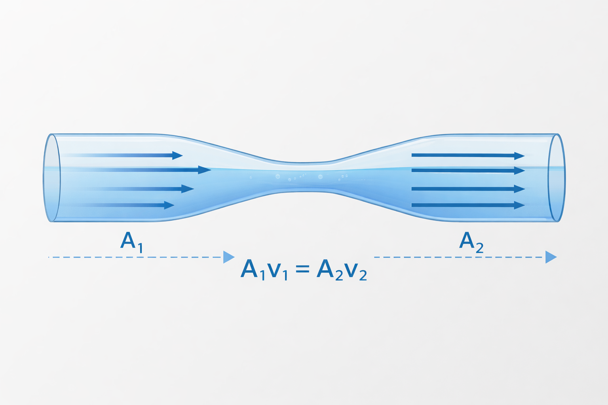
Caudal Volumétrico
El caudal (Q) es el volumen de fluido que pasa por una sección en un tiempo dado:
Q = A · v = constante [m³/s]
UNIDAD 1Capítulo 2: Continuidad33
Relación Área - Velocidad en Flujos Incompresibles
Sección Grande (A↑)
Velocidad baja
Presión alta (Bernoulli)
Flujo más lento
Ejemplo: tubería principal
Sección Pequeña (A↓)
Velocidad alta
Presión baja (Bernoulli)
Flujo más rápido
Ejemplo: boquilla, inyector
Ejemplo Resuelto
PROBLEMA
Agua fluye por una tubería de 10 cm de diámetro a 2 m/s. Si la tubería se reduce a 5 cm de diámetro,
¿cuál es la nueva velocidad?
Resultado: Al reducir el diámetro a la mitad, el área se reduce a 1/4 y la velocidad se
cuadruplica.
UNIDAD 1Capítulo 2: Área vs Velocidad34
2.2 Principio de Bernoulli: La Conservación de la Energía
Bernoulli establece que para un flujo no viscoso e incompresible, la suma de la presión estática, la presión
dinámica (energía cinética) y la presión hidrostática (energía potencial) es constante a lo largo de una
línea de corriente.
Ecuación de Bernoulli
P + ½ρv² + ρgh = constante
Componentes de la ecuación:
P = Presión estática
½ρv² = Presión dinámica
ρgh = Presión hidrostática
Interpretación:
Donde la velocidad del fluido aumenta, la presión interna disminuye
(si la altura es constante).
Interpretación Crítica: Este intercambio de energía es contraintuitivo pero fundamental. Es
la base de fenómenos como la sustentación de aviones, el funcionamiento de atomizadores y el efecto Venturi.
Simplificación para Flujo Horizontal (h = cte)
P₁ + ½ρv₁² = P₂ + ½ρv₂²
Si v₂ > v₁ entonces P₂ < P₁. Mayor velocidad = menor presión.
UNIDAD 1Capítulo 2: Bernoulli35
6
Problemas de Bernoulli y Continuidad
Instrucciones
Resuelve los siguientes problemas aplicando las ecuaciones de Continuidad y Bernoulli.
Problema 1: Manguera de Jardín
Agua sale de una manguera de 2 cm de diámetro a 3 m/s. Si tapas parcialmente la
salida reduciendo el diámetro efectivo a 0.5 cm, ¿a qué velocidad sale ahora el agua?
Problema 2: Tubo Venturi
En un tubo Venturi, la sección ancha tiene diámetro de 8 cm y presión de 150 kPa.
La sección angosta tiene diámetro de 4 cm. Si el agua fluye a 2 m/s en la sección ancha, calcula: a)
La velocidad en la sección angosta b) La presión en la sección angosta
Problema 3 (Albatros Plus)
Un avión vuela a nivel constante. El aire sobre el ala viaja a 250 m/s y debajo
del ala a 200 m/s. Si la densidad del aire es 1.2 kg/m³, ¿cuál es la diferencia de presión entre la
parte superior e inferior del ala?
UNIDAD 1Actividad 6: Bernoulli36
2.3 Aerodinámica Avanzada: Más allá de Bernoulli
Corrección de mito común: En la enseñanza básica se suele explicar el vuelo solo con
Bernoulli ("el aire recorre más distancia por arriba del ala → va más rápido → menos presión →
sustentación"). Sin embargo, esto es incompleto y técnicamente incorrecto ("Teoría del
tiempo de tránsito igual").
La Explicación Completa
Para un enfoque Albatros Competitivo, debemos integrar la Tercera Ley de Newton y el
concepto de Circulación.
Explicación por Bernoulli
La forma del ala acelera el aire en la parte superior, creando una zona de baja presión.
La diferencia de presión entre arriba (baja) y abajo (alta) genera una fuerza neta hacia
arriba.
Explicación por Newton
El ala desvía el flujo de aire hacia abajo (downwash).
Por la tercera ley de Newton (acción-reacción), el aire empuja el ala hacia arriba.
Conclusión: Ambos principios (Bernoulli y Newton) son descripciones matemáticas simultáneas
del mismo fenómeno físico. Ninguno es "más correcto" que el otro; son perspectivas complementarias.
El Error del "Tiempo de Tránsito Igual"
La idea de que las partículas de aire deben encontrarse en el borde posterior del ala es
falsa. En realidad, el aire que pasa por arriba llega antes que el de
abajo porque va genuinamente más rápido.
UNIDAD 1Capítulo 2: Aerodinámica Avanzada37
Aerodinámica de Fórmula 1: "Volar Invertido"
En F1, buscamos lo opuesto al avión: Downforce (Fuerza descendente) para pegar el coche al
suelo en curvas a 300 km/h.
Alerones Invertidos
Tienen la cara curva hacia abajo.
El aire se acelera por debajo
Crea baja presión (succión) hacia el asfalto
Genera downforce a costa de arrastre
Efecto Suelo y Difusores
El fondo del coche actúa como un tubo Venturi.
Al acercarse al suelo, el área de flujo se reduce
El aire se acelera brutalmente
Crea zona de muy baja presión
Dato F1: Un coche de Fórmula 1 moderno genera suficiente downforce a 180 km/h para conducir
teóricamente por el techo de un túnel. Es mucho más eficiente que los alerones porque genera downforce con
menos drag (resistencia).
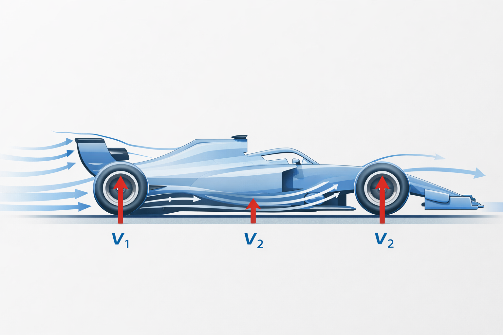
UNIDAD 1Capítulo 2: Aerodinámica F138
ESQUEMA COMPARATIVO: F1 vs Aviación
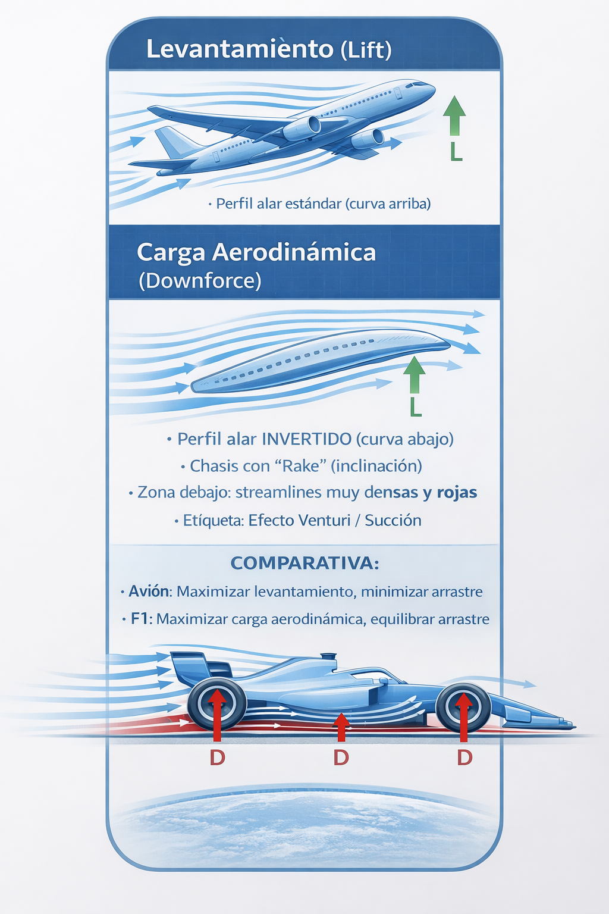
UNIDAD 1Capítulo 2: Esquema F1 vs Aviación39
Infografía
Aerodinámica: F1 vs Aviación
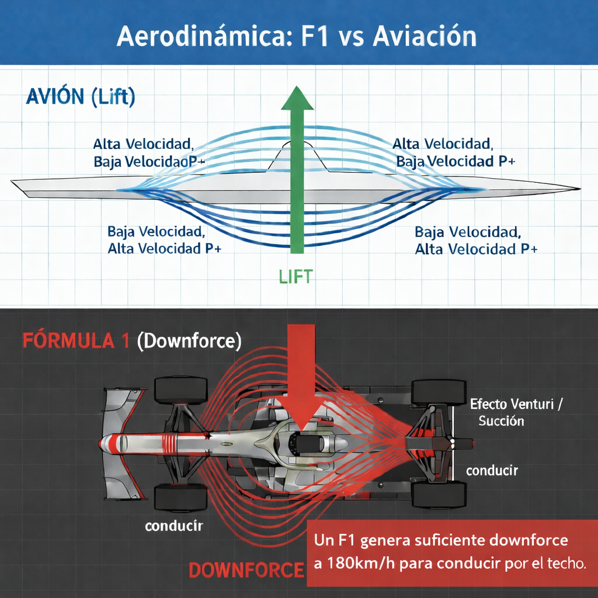
UNIDAD 1Capítulo 2: Infografía40
Procedimientos
Tutorial Albatros Tech: Construcción de un Tubo Venturi Demostrativo
Objetivo: Visualizar la caída de presión de Bernoulli.
Materiales
2 botellas de plástico transparente (2L y 600ml)
Cinta adhesiva resistente
3 tubos transparentes delgados (popotes/pajillas)
Agua con colorante
Secador de pelo o soplador de hojas
Recipiente para el agua
Procedimiento de Montaje
Corta las botellas para crear un túnel que se estrecha al centro (botella grande → botella chica
→ botella grande).
Perfora e inserta verticalmente los tubos delgados en tres puntos: antes del estrechamiento (A),
en el estrechamiento (B) y después (C).
Sumerge los extremos inferiores de estos tubos en un reservorio de agua teñida.
UNIDAD 1Tutorial: Tubo Venturi41
7
Construcción y Prueba del Tubo Venturi
Prueba del Dispositivo
Sopla aire fuertemente por el eje horizontal del túnel con el secador
Observa el nivel de agua en los tres manómetros (A, B, C)
Registra tus observaciones
Esquema de tu dispositivo:
Observaciones:
Punto
Posición
Nivel del agua
Interpretación
A
Antes del estrechamiento
B
En el estrechamiento
C
Después del estrechamiento
Pregunta de análisis:
¿Por qué el agua sube más en el punto B (estrechamiento)? Explica usando el efecto
Venturi.
UNIDAD 1Actividad 7: Venturi42
Procedimientos
Tutorial Albatros Plus: Simulación CFD Básica en SimScale
Objetivo: Obtener el Coeficiente de Arrastre (Cd) de un objeto
simple.
Registro
Crear cuenta académica gratuita en simscale.com
Importar Geometría
Subir un archivo CAD (ej. una esfera o un coche simplificado tipo F1 in Schools).
Configurar Dominio (Túnel de Viento Virtual)
Crear un volumen de aire ("Enclosure"). Dimensiones: mínimo 3x largo adelante y 6x hacia atrás.
Condiciones de Frontera
Inlet (Entrada): Velocity Inlet (ej. 20 m/s)
Outlet (Salida): Pressure Outlet (0 Pa manométrica)
Paredes: Slip walls para túnel, No-slip para objeto
Mallado (Meshing)
Usar "Hex-dominant automatic". Refinar cerca de la superficie (Boundary Layers).
Simulación y Post-Proceso
Ejecutar solver "Incompressible". Visualizar Streamlines coloreadas por velocidad.
UNIDAD 1Tutorial: CFD SimScale43
Reto Digital
Optimización Aerodinámica Virtual
Utilizando los resultados del tutorial de SimScale:
Modificar el diseño CAD original (ej. agregar un carenado o "fairing" a la parte trasera de la
esfera para hacerla una gota).
Correr la simulación nuevamente con la geometría modificada.
Meta: Reducir el coeficiente de arrastre (Cd) en al menos un 20%.
Documentar cómo la eliminación de la turbulencia trasera (separación de flujo) reduce la
resistencia.
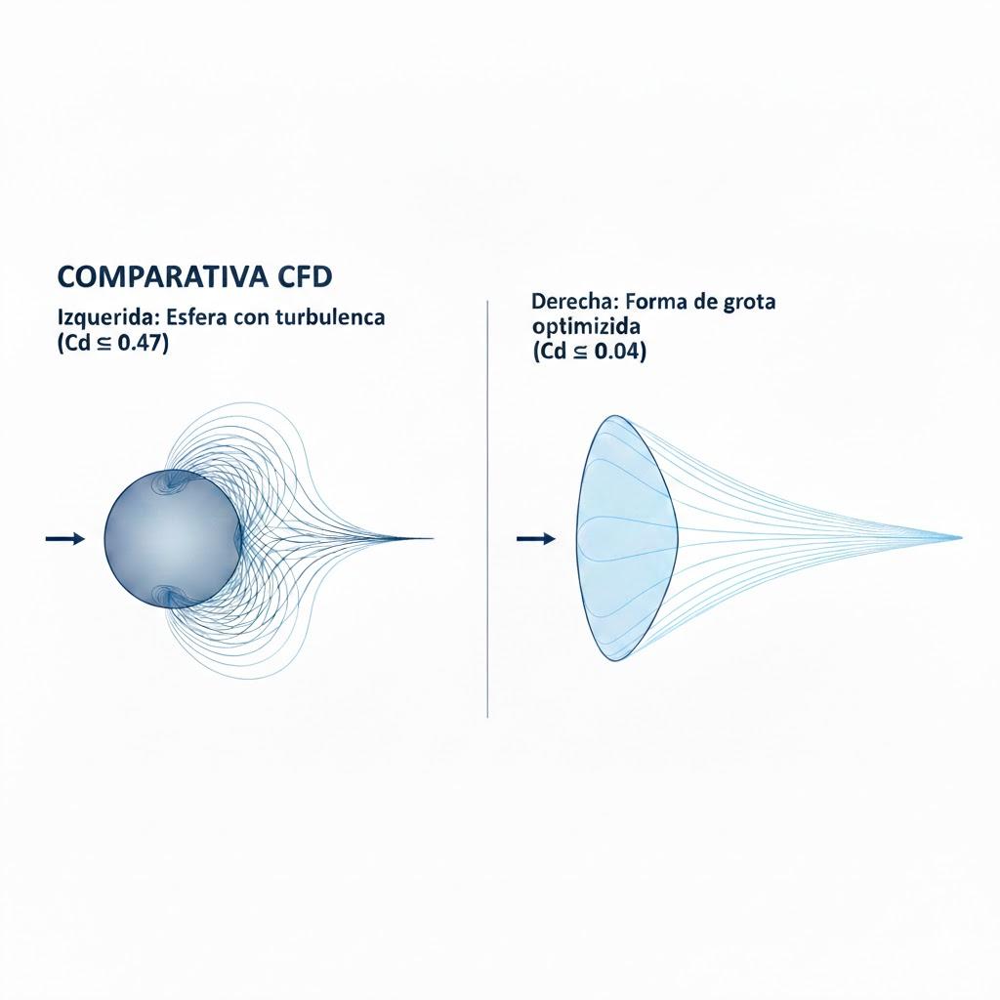
Competencia F1 in Schools: Los equipos ganadores optimizan sus coches en CFD antes de
fabricar, logrando Cd de 0.08-0.12 con alto downforce.
UNIDAD 1Reto Digital: CFD44
03
Proyecto Maker e Hidráulica Avanzada
Construye un brazo robótico hidráulico funcional y explora
la robótica blanda del futuro.
Capítulo 3: Proyecto Maker e Hidráulica Avanzada
Objetivo
Integrar los conocimientos de Pascal y transmisión de potencia para construir un
manipulador robótico funcional. El proyecto evoluciona en dos niveles: uno
puramente mecánico (Tech) y uno mecatrónico (Plus) que introduce
sensores y control.
Fases del Proyecto
Fase
Nivel
Descripción
1
Tech
Diseño y construcción mecánica del brazo
2
Tech
Sistema hidráulico con jeringas
3
Plus
Integración de sensor de fuerza (FSR)
4
Plus
Programación Arduino y calibración
5
Competitivo
Reto "Protocolo HAZMAT"
Escenario: Un equipo de respuesta a materiales peligrosos necesita un manipulador remoto
para mover contenedores de residuos tóxicos sin exponer a los operadores.
UNIDAD 1Capítulo 3: Objetivos46
Introducción Técnica
Actuación Hidráulica vs Eléctrica
En robótica avanzada, como el robot Atlas de Boston Dynamics (versiones
anteriores), se prefería la hidráulica por su inigualable Densidad de Potencia.
Comparativa: Hidráulica vs Eléctrica
Hidráulica
Ventajas:
Alta densidad de potencia
Soporta impactos (saltos)
Bloqueo sin consumir energía
Feedback háptico natural
Desventajas:
"Sucia" (fugas de aceite)
Ruidosa
Difícil control de precisión
Eléctrica
Ventajas:
Limpia y silenciosa
Control de precisión milimétrica
Eficiencia energética
Fácil programación
Desventajas:
Menor densidad de potencia
Engranajes pueden dañarse
Consume energía para mantener posición
Tendencia actual: La industria se mueve hacia lo eléctrico (Nuevo Atlas 2024). Sin embargo,
en proyectos escolares, la hidráulica de jeringas permite "sentir" la fuerza y visualizar la física
directamente.
UNIDAD 1Capítulo 3: Introducción47
8
Lista de Materiales y Diseño del Brazo HAZMAT
Lista de Materiales (marca lo que ya tienes)
Cartón corrugado (doble pared) - 50x70 cm mínimo
8 jeringas de 10ml (4 pares maestro-esclavo)
Manguera de vinilo transparente (2m aprox)
Abatelenguas o palitos de madera (10 unidades)
Clips metálicos grandes (para pivotes)
Cinchos de plástico (bolsa de 50)
Colorante vegetal (4 colores diferentes)
Pistola de silicón y barras
Cúter y tijeras
Regla y escuadra
Diseño de Eslabones
Dibuja tu diseño preliminar. El brazo debe tener: Base (giro), Hombro (elevación),
Codo (alcance) y Pinza (agarre).
Código de colores para circuitos:
Azul: Base (Giro)
Verde: Hombro (Elevación)
Amarillo: Codo (Alcance)
Rojo: Pinza (Agarre)
UNIDAD 1Actividad 8: Materiales48
Procedimientos
Fase 1: Ingeniería Mecánica (Albatros Tech)
Paso 1: Diseño de Eslabones
Cortar en cartón la Base, Hombro, Codo y Pinza. Usar perfiles en "U" o cajón para dar rigidez estructural (el
cartón plano se dobla fácilmente bajo carga).
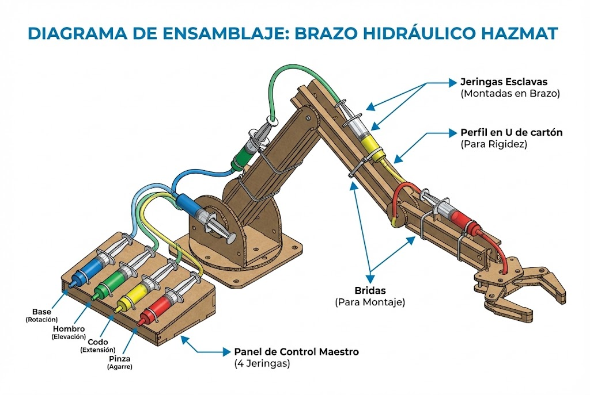
Paso 2: Sistema Hidráulico (Ley de Pascal)
Conectar dos jeringas con una manguera (un par para cada articulación).
Llenar el sistema sumergido en agua para evitar burbujas de aire.
Añadir colorante para identificar cada circuito.
CRÍTICO: El aire es compresible. Si queda aire atrapado en el sistema, el brazo tendrá
"juego" y será impreciso. Purga todas las burbujas antes de sellar las conexiones.
Paso 3: Montaje
Fijar las "Jeringas Esclavas" en el brazo usando cinchos (el pegamento suele despegarse con la fuerza)
Conectar los émbolos a los eslabones móviles
Crear un "Panel de Control Maestro" donde se montan las jeringas que operará el usuario
UNIDAD 1Capítulo 3: Fase 149
Procedimientos
Fase 2: Ingeniería Mecatrónica (Albatros Plus)
Mejora: Dotar al brazo de "sentido del tacto" y control digital mediante un
sensor de fuerza.
Integración de Sensor de Fuerza (FSR)
Hardware
Pegar un sensor FSR (Force Sensitive Resistor) en la cara interna de una de las pinzas.
Circuito
Conectar el FSR en un divisor de tensión con una resistencia de 10kΩ. Conectar el punto medio al
pin A0 de un Arduino UNO.
Nota Técnica: Los FSR no son lineales. Para mayor precisión, se debe calcular la
conductancia (1/R) que sí es lineal con la fuerza aplicada.
UNIDAD 1Capítulo 3: Fase 2 - FSR50
Código de Control Arduino
// Lectura de presión para evitar aplastar objetos frágilesint fsrPin = A0;
int fsrReading;
int umbralAlerta = 500; //
Calibrar según el sensorvoid setup() {
Serial.begin(9600);
pinMode(LED_BUILTIN, OUTPUT);
Serial.println("Sistema HAZMAT iniciado");
}
void loop() {
fsrReading = analogRead(fsrPin);
// Mostrar lectura en monitor serial
Serial.print("Fuerza: ");
Serial.println(fsrReading);
// Si la presión supera un umbral seguroif (fsrReading > umbralAlerta) {
digitalWrite(LED_BUILTIN, HIGH); // Alerta visual
Serial.println("¡ALERTA: PRESIÓN CRÍTICA!");
} else {
digitalWrite(LED_BUILTIN, LOW);
}
delay(100); // Lectura cada 100ms
}
Explicación del código:
analogRead(fsrPin): Lee el voltaje del divisor (0-1023)
umbralAlerta: Valor a calibrar experimentalmente
LED_BUILTIN: LED integrado como alerta visual
Serial.println: Envía datos al monitor para depuración
Aplicación real: Este sistema simula la protección háptica de robots quirúrgicos como el Da
Vinci, que evitan aplicar fuerza excesiva en tejidos delicados.
UNIDAD 1Capítulo 3: Código Arduino51
9
Montaje del Circuito FSR y Calibración
Objetivo
Montar el circuito del sensor de fuerza y calibrar el umbral de alerta.
Materiales adicionales:
Arduino UNO o compatible
Sensor FSR (Force Sensitive Resistor)
Resistencia de 10kΩ
Protoboard y cables
Cable USB para programación
Diagrama de conexión:
Tabla de Calibración:
Coloca diferentes objetos sobre el sensor y registra la lectura.
Objeto
Peso aprox (g)
Lectura Arduino
Sin presión
0
Moneda
~5
Huevo
~60
Vaso con agua
~200
Presión fuerte (mano)
-
Umbral de alerta seleccionado:
Basándote en la tabla, ¿qué valor de umbral usarías para evitar aplastar un huevo?
UNIDAD 1Actividad 9: Circuito FSR52
Prácticas Integradoras
Reto Competitivo: "Protocolo HAZMAT"
Configuración de la Pista
Una mesa con obstáculos distribuidos
Zona de inicio del brazo robótico
Vaso "tóxico" (lleno de agua) en posición central
Contenedor seguro (destino) en el extremo opuesto
Reglas de la Misión
El operador tiene los ojos vendados (o está detrás de una barrera)
Solo se guía por las instrucciones de un compañero que ve una cámara (simulando operación remota)
La alerta del LED del Arduino indica si ya agarró el objeto (y si está aplicando demasiada fuerza)
Tarea: Recoger el vaso "tóxico" sin aplastarlo y verterlo en el contenedor seguro
Sistema de Puntuación
Puntos = Tiempo + (Litros derramados × 50) + (Alertas de presión × 10)
La hidráulica rígida es poderosa, pero peligrosa para humanos. La Robótica Blanda usa
fluidos para inflar elastómeros flexibles, imitando músculos biológicos.
Siliconas de Platino (Ecoflex)
Estándar profesional
Curan rápido
Elásticas y biocompatibles
Caras y sensibles a contaminantes
Hack Maker: Silicona + Maicena
Silicona de calafateo acética
+ Maicena (almidón de maíz)
Cura en 15 minutos (vs 24 horas)
Económico y accesible
Actuadores PneuNets
Son estructuras con cámaras internas que, al inflarse con aire, generan movimiento direccional gracias a una
capa restrictiva que limita la expansión en un lado.
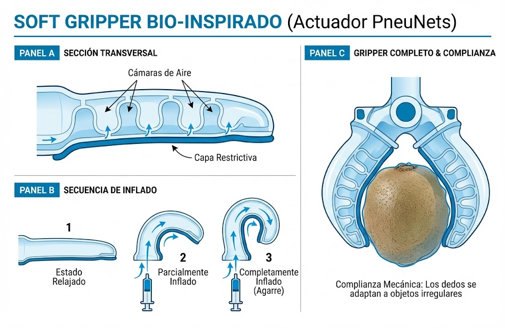
Complianza mecánica: Estos "dedos" blandos pueden agarrar objetos irregulares (frutas,
huevos) sin necesidad de sensores complejos, adaptándose naturalmente a la forma del objeto.
UNIDAD 1Capítulo 3: Soft Robotics54
10
Fabricación de Soft Gripper Bio-Inspirado
Objetivo
Crear un dedo robótico blando que se curva al inflarse.
Materiales:
Silicona de calafateo transparente
Maicena (almidón de maíz)
Molde impreso en 3D o hecho con plastilina
Tira de tela o papel resistente
Jeringa grande para inflado
Manguera delgada
Procedimiento:
Mezclar silicona y maicena (proporción 1:1 en volumen)
Vaciar en el molde con las cámaras internas
Antes de que cure, pegar la tira de tela en la base
Dejar curar (15-30 minutos con maicena)
Desmoldar y conectar la manguera de inflado
Registro de tu gripper:
Foto o dibujo antes de inflar:
Foto o dibujo después de inflar:
¿Qué objetos logró agarrar tu gripper?
UNIDAD 1Actividad 10: Soft Gripper55
Profesionales con Valor
Lección de Historia: El Desastre del Challenger (1986)
La ingeniería de fluidos y materiales tiene consecuencias de vida o muerte.
El Hecho
El transbordador espacial Challenger explotó 73 segundos después del despegue debido al
fallo de una junta tórica (O-ring) en el cohete derecho.
La Física
Las juntas eran de un elastómero llamado Viton. Todos los polímeros tienen una
Temperatura de Transición Vítrea (Tg).
Por debajo de Tg, la goma pierde su elasticidad
Se comporta como vidrio quebradizo
El día del lanzamiento: -2°C (inusualmente frío)
El Viton se endureció y no pudo sellar los gases
La Ética
Los ingenieros de Morton Thiokol sabían que el material fallaría con el frío y recomendaron
"NO LANZAR".
La gerencia, bajo presión política y de itinerario, ignoró a los ingenieros.
Mensaje Albatros: Un ingeniero competente debe tener el coraje ético de
decir "No" cuando la seguridad está comprometida, respaldando su decisión con datos sólidos (como la curva
de Tg del material).
UNIDAD 1Profesionales: Challenger56
11
Reflexión Ética: El Dilema del Ingeniero
Contexto
Has estudiado dos casos donde las decisiones de ingeniería tuvieron consecuencias fatales: la
Presa Austin (1911) y el Challenger (1986). Ambos comparten un patrón: los datos
técnicos fueron ignorados por presiones externas.
Preguntas de Reflexión
1. En el caso Challenger, los ingenieros dijeron "No" pero fueron
ignorados. ¿Qué más podrían haber hecho? ¿Tenían opciones?
2. Imagina que trabajas en una empresa y descubres un
defecto de seguridad, pero tu jefe te presiona para no reportarlo. ¿Qué harías y por qué?
3. El código de ética de ingeniería establece que "la
seguridad del público es primordial". ¿Crees que esto siempre se cumple en la práctica? ¿Qué
barreras existen?
4. ¿Qué lecciones de estos casos aplicarías en tu futura
carrera?
UNIDAD 1Actividad 11: Reflexión Ética57
Conclusión
Conclusión de la Unidad
Hemos recorrido el camino del fluido: desde la molécula que se adhiere al vidrio, pasando por la
presión que derriba presas, hasta el aire que pega un F1 al suelo y el aceite que da fuerza a un robot.
En el modelo Albatros, la teoría no es el fin, es el medio.
La Hidrostática nos enseñó sobre integridad estructural y ética profesional.
La Hidrodinámica nos dio herramientas de simulación y optimización de
eficiencia.
La Hidráulica y Robótica Blanda nos permitieron interactuar con el mundo físico
de manera tangible.
Mensaje final: Ahora poseen las herramientas para ver el mundo no como cuerpos rígidos,
sino como flujos de energía y materia que pueden ser modelados, diseñados y controlados. El
siguiente paso es aplicar estos conocimientos en competencias, proyectos y, eventualmente, en su carrera
profesional.
UNIDAD 1Conclusión de la Unidad58
Tip Extra
Fluidos No Newtonianos en Protección
No todos los fluidos fluyen más fácil al empujarlos. Los Fluidos Espesantes al Corte
(STF), como la mezcla de maicena y agua, se vuelven sólidos al golpearlos.
Tecnología Militar
Se están desarrollando chalecos antibalas "líquidos" impregnando Kevlar con fluidos STF
(nanopartículas de sílice en polietilenglicol).
Comportamiento normal:
Flexibles para caminar
Cómodos de usar
Permiten movimiento
Bajo impacto:
Duros como el acero
Disipan mejor la energía
Protección superior
Experimento Casero: "Oobleck"
Mezcla 2 partes de maicena con 1 parte de agua
Trata de golpear la superficie con el puño
Sentirás una pared sólida
Mete la mano despacio y será líquido
¡Es la misma física que protege a los soldados del futuro!
UNIDAD 1Tip Extra: Fluidos No Newtonianos59
12
Experimento: Oobleck y Fluidos No Newtonianos
Objetivo
Experimentar con un fluido no newtoniano y comprender su comportamiento dual.
Materiales:
Maicena (250g aproximadamente)
Agua (125ml aproximadamente)
Recipiente amplio
Objetos pequeños para probar (canica, moneda)
Procedimiento y Observaciones:
Prueba 1: Introduce tu dedo lentamente. ¿Qué observas?
Prueba 2: Golpea la superficie rápidamente. ¿Qué observas?
Prueba 3: Forma una bola apretándola. ¿Qué pasa cuando dejas
de apretar?
Prueba 4: Deja caer una canica sobre la superficie. ¿Rebota
o se hunde?
Análisis:
¿Por qué este fluido se comporta diferente según la velocidad de deformación?
Explica en términos de las partículas de almidón.